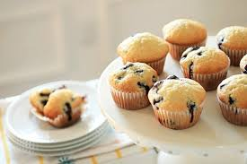

Classic Blueberry Muffins

Preparation Time: 15 minutes
Cook Time: 20-25 minutes
Serving Size: 12 muffins
Fluffy, moist, and
bursting with juicy blueberries, these Classic Blueberry Muffins are the perfect treat for breakfast or a midday
snack. With a soft crumb and a hint of vanilla, they strike the perfect balance between sweetness and tartness. Whether you enjoy
them fresh out of the oven or save them for later, these muffins are guaranteed to brighten your day!
Ingredients:
- 2 cups all-purpose flour
- 3/4 cup granulated sugar
- 2 1/4 tsp baking powder
- 1/2 tsp salt
- 1/2 cup unsalted butter, melted
- 2 large eggs
- 1 cup milk
- 1 1/2 tsp vanilla extract
- 1 1/2 cups fresh or frozen blueberries
Instructions:
- Preheat oven to 375°F (190°C) and line a muffin tin with liners.
- In a large bowl, whisk together flour, sugar, baking powder, and salt.
- In a separate bowl, mix melted butter, eggs, milk, and vanilla extract.
- Gradually add wet ingredients to dry ingredients, stirring until just combined.
- Gently fold in blueberries.
- Divide batter evenly into muffin liners, filling each about 3/4 full.
- Bake for 20-25 minutes, or until a toothpick inserted in the center comes out clean.
- Let cool in the pan for 5 minutes before transferring to a wire rack.